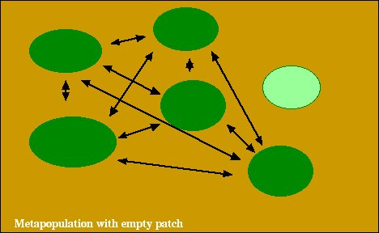
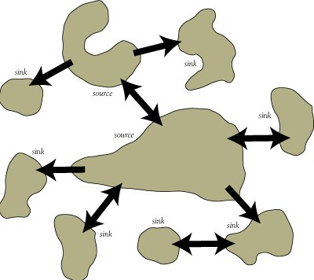
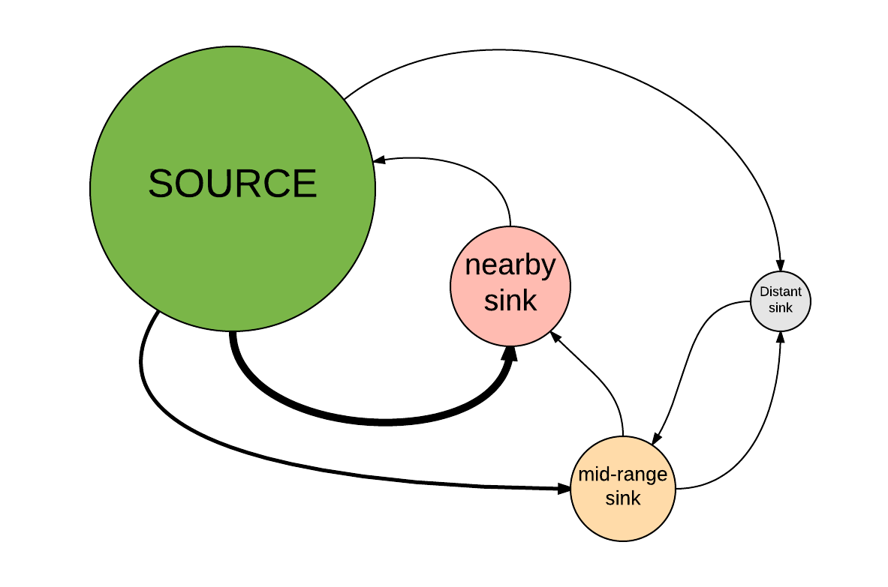

Metapopulations
NRES 470/670
Spring 2022
Upcoming midterm exam: April 13
when and where The second midterm exam (out of two) is coming up on Wednesday April 13. You will have the whole 50 minute class period to take the exam (really, you have the whole hour if you need it). We will use the same basic format as we used for the first midterm.
what The exam will cover:
- All material in Chapters 1-4 of the Gotelli book:
- Chapter 1: Exponential growth
- Chapter 2: Logistic growth
- Chapter 3: Age structured population and matrix models
- Chapter 4: Metapopulations
- All material covered in lectures, including the following web pages and corresponding lectures and top hat pages:
- Systems thinking and modeling
- Exponential growth
- Malthus and limits to growth
- Logistic population growth
- Allee effect
- Age-structured populations
- Matrix population models
- “Embracing” uncertainty (this and below are new topics for this exam)
- Small-population paradigm
- Declining-population paradigm
- Population Viability Analysis
- Metapopulations and source-sink dynamics
- NOTE: all lectures have been recorded and are available via the “Zoom” link on WebCampus in case you missed any or in case you’d like to use these recordings as review/study materials
- All material covered in labs 1-4, including:
- Basic programming concepts:
- Conditional logic (IF-THEN-ELSE): see examples in Malthus and Allee effect lectures
- Iteration (‘FOR loops’): see examples in Lab 1 and Lab 4.
- NOTE: you will NOT be tested on how to run population models in R (or how to do anything else in R).
The exam will consist of a mixture of multiple-choice and short-answer questions.
We will do a review session in class on Monday April 11. Please make note of any questions that come up as you study- we can talk these over during the review session!
I will also host an optional review session on the evening of Tuesday April 12 (location TBD). Margarete and I will also set up some additional office hours, as we did for the first midterm.
Metapopulations
What is a metapopulation?
Broadly speaking, a metapopulation is a group of populations (often called **subpopulations) that occupy spatially distinct habitat patches that are close enough to support dispersal among patches.
We often think of such models as “spatially structured” or “spatially explicit”, although some metapopulation models (like the models considered below, and in the Gotelli textbook) use a rather abstract representation of space!
Now that we’re thinking about animals living in particular areas in space, we need to incorporate information about movement ecology in addition to population ecology! Patches in a metapopulation are connected via dispersal. If there were no connectivity (dispersal among patches), it wouldn’t really be a metapopulation, but rather a set of isolated populations that you could model independently.
Including a dispersal process allows us (finally!) to think about the whole “BIDE” equation!
\(\Delta N = B + I - D - E\)
Metapopulation ecology covers a wide range of scenarios- as long as there are distinct habitat patches (subpopulations) in a landscape, and as long as there is some dispersal among patches, then it is a type of metapopulation. When there is a very high rate of dispersal (and mating) among patches, then the metapopulation is described as “panmictic” (perfect genetic connectivity).
NOTE: in some definitions (including for ‘classical’ metapopulations – see below), a “metapopulation” is more narrowly defined as a set of patches with limited connectivity and with at least some unoccupied patches at some points in time. I prefer the more inclusive definition!

Although the term “metapopulation” is often used to refer to models where we don’t keep track of abundance in each patch (we only consider patch occupancy - like the models in Gotelli Chapter 4), we can keep track of patch abundance in a metapopulation model if we really want to! In fact, if we want, each patch can contain a stage-structured, density dependent population (like the more complex metapopulation model in lab 6!). Or it can contain an assemblage of individuals, as in an individual-based model.
We will have a chance to use a metapopulation model in Lab 6 that is much more complex than the models in Gotelli Chapter 4!
But – in fact, many metapopulation models (‘classical metapopulations’, covered in this lecture, lab 6 and Gotelli’s Chapter 4) don’t consider individuals at all! Instead, we only care about whether a patch is occupied (N > 0) or not (N = 0). Different sets of patches may be occupied at different points in time.

For simplicity, ‘Classical’ metapopulation models assume that all areas outside a patch are completely unsuitable (i.e., they are NOT habitat).
Classical metapopulaton models also often assume that all patches are similar (similar habitat quality, area and connectivity to neighboring patches), and therefore are more or less interchangeable. [NOTE: we revise this assumption when we start to consider ‘source and sink’ models below]
Instead of keeping track of the individuals in each patch (\(N\)), classical metapopulation models just keep track of whether or not each patch is occupied (N > 0) or not (N = 0). Or even more simply, these models often just keep track of the fraction of occupied patches in our landscape (\(f\))!
Instead of keeping track of the number of individuals dispersing among patches, classical metapopulation models only consider the consequences of dispersal, which include colonization of unoccupied (empty) patches via immigration (\(I\)) and the rescue effect (immigration preventing extinction of a patch; see below).
“Classical” metapopulation models
The simplest type of spatially structured population model is the “classical” metapopulation model.
The metapopulation concept was first introduced by ecologist Richard Levins in 1969, and further developed by Ilkka Hanski among others.
In a classical metapopulation, patches are either occupied (coded as 1) or unoccupied (coded as 0) at any given point in time. We don’t consider abundance (\(N\)) in these models- we just keep track of whether each patch is occupied or not, and what fraction of patches in our landscape are occupied at each time step.
That is, the [Stock] we are studying now is NOT the total number of individuals but instead it is the fraction of patches occupied!
Instead of investigating population dynamics, we are investigating metapopulation occupancy dynamics – that is, how the fraction of occupied patches changes over time.
Q: how does a metapopulation grow?
Q: how does a metapopulation shrink?
Q: what is the analog of demographic stochasticity in a metapopulation model? [tophat]
[pause and answer TopHat question]
colonization is the process of a patch transitioning from unoccupied to occupied via immigration from an external source!
extirpation (or extinction) is the process of a patch transitioning from occupied to unoccupied.
global extinction represents extinction (extirpation) of all patches in the metapopulation.
More formally, here are some terms we will consider:
\(f_t\) is the fraction, or proportion, of patches that are occupied at time \(t\). This is also known as the occupancy fraction. This is the primary [Stock] we model in a classical metapopulation model.
\(I\) is the total fraction of patches that are colonized by immigrants per time period (colonization rate, or “immigration” rate).
\(E\) is the total fraction of patches that are extirpated per time period (extirpation rate).
Therefore, the change in occupancy can be expressed as:
\(\Delta f = I - E\)
\(p_i\) is the probability of colonization for any given (non-occupied) patch.
\(p_e\) is the probability of extinction for any given (occupied) patch.
Now that we have the basic terms defined, we can build a basic model of metapopulation dynamics! We will do this in lab- refer to the metapopulation lab for more details!
Assumptions of the classical metapopulation model:
- Homogeneous patches (all patches are considered equal and interchangeable- they do not differ in size or quality – any differences in habitat quality or spatial context within patches are ignored).
- Extinction and colonization are insensitive to spatial context (spatial context, or “neighborhood effects”, do not affect \(p_e\) and \(p_i\)).
- No time lags (metapopulation growth responds instantaneously to any changes in \(f\)).
- Very large number of patches (even when the fraction of occupied patches \(f\) is very small, the classical metapopulation still persists!). That is, global extinction is not possible!
Clearly this is not a very realistic model, but it is a useful starting place. So.. we will start by making these assumptions, but then we will “relax” some of them!
Variant #1: island-mainland model
Colonization occurs via immigration from a constant external source – a constant propagule rain.
This is the simplest metapopulation model. \(p_i\) and \(p_e\) are constant.
Variant #2: internal colonization
Now, colonization can only happen via immigration from within the metapopulation itself. So when a small fraction of patches are colonized, the colonization probability is low because of a lack of potential immigrants within the metapopulation.
\(p_i = i\cdot f\)
\(i\) represents the strength of internal immigration (how much the probability of colonization increases with each new occupied patch in the metapopulation.
Another way to think of \(i\) in this model is the maximum rate of successful colonization of an unoccupied patch when nearly all patches in the metapopulation are occupied.
Variant #3: rescue effect.
Now, the extinction rate can be reduced by immigration from other populations in the metapopulation!
Q: does this make sense? How does the rescue effect work?
\(p_e = e(1-f)\)
\(e\) represents the strength of the rescue effect. More to the point- \(e\) represents the maximum rate of extinction (when nearly all patches are vacant so the rescue effect is negligible).
‘Dynamic’ stability
In the classical metapopulation model, extinction is not necessarily uncommon. Patches go extinct – small patches can be highly vulnerable to demographic stochasiticity as we know! – but as long as patches can get re-colonized, we can reach an equilibrium, where extinctions and colonizations cancel each other out. In a classical metapopulation model, this is a stable equilibrium, and a stable metapopulation in which local extinctions are possible (\(p_e > 0\)) is called dynamically stable. That is, any given patch could be extinct at any given time, but on the whole, the size of the metapopulation (total patches occupied) is relatively stable and not at risk of regional (or global) extinction!
The concept of dynamic metapopulation stability- in which extinctions and colonizations balance out - has much in common with the dynamic stability of a single population at carrying capacity - in which any given individual could die at any given time, but deaths and births approximately balance out!
Spreading the risk!
In the classical metapopulation models, we assumed there were a very large number of patches in our landscape, so there was no real chance of regional/global extinction. But most real metapopulations are small enough such that we often need to consider the risk of global extinction.
Let’s consider a system in which a species occupies a single patch, and there is a probability of extinction \(p_e\) of 0.15 per patch per year.
Q: What is the probability of regional extinction in the next 10 years?
The probability of persistence for 1 year is \(1-p_e\), so the probability of persistence for 10 years is \((1-p_e)^{10}\) and the probability of regional extinction is \(1-((1-p_e)^{10})\)
which works out to be about 80%. There is a substantial probability of regional extinction sometime over the next 10 years!
What if there were two patches instead of just one?
Let’s assume that the extinction risk for the two patches are independent – that is, the extinction of one patch doesn’t influence whether or not the other patch goes extinct!
If the probability of extinction of one patch over the next 10 years is 0.8, then the probability of both patches going extinct sometime over the next 10 years is 0.8*0.8 = 0.64
So the chance of regional extirpation is somewhat reduced with two populations!!
This is an example of spreading the risk.
What if there are 5 independent populations instead of two? Then what is the chance of regional extirpation over 10 years?
\([1-(1-p_e)^{10}]^5\)
This works out to be around 33%
What if there are 15 independent populations instead of five? Then what is the chance of regional extirpation over 10 years?
\([1-(1-p_e)^{10}]^5\)
This works out to be around 4% – we have effectively spread out the risk, so that despite a relatively high extinction risk at the patch level, the metapopulation is unlikely to experience global extinction
Q: if we included dispersal among patches, would dispersal serve to further reduce the risk of global extinction? Why or why not?
Q: What if the extinction of one patch was perfectly correlated with the extinction of all other patches. If one goes extinct, all go extinct. [tophat]
bonus question: what is the risk of global extinction assuming the risk of extinction in each of the two patches is not correlated (completely independent of one another)?
Sources and sinks!
One important and practically useful concept related to metapopulations is that of source-sink dynamics

In the real world, patches vary in size and quality. That is, the assumption of homogeneity of patches (inherent to the classical metapopulation framework) is unlikely to be met in most real metapopulations!
Just like with an age-structured population, where vital rates and equilibrium abundance can vary by age or size-class, vital rates and abundances can vary over space. Some areas might have better habitat, with higher overall population growth rates! On the other hand, some areas might have poor habitat- and these areas may be associated with lower vital rates…
In fact, some patches may be so resource-poor or afford such bad protection from predators that population growth is negative (i.e., \(r\) below zero, or \(\lambda\) less than 1). Other patches may represent perfect conditions for population growth (at least if the habitat isn’t too crowded)!
A source population is defined as a patch that maintains a positive growth rate (r>0) and contributes more immigrants to nearby patches (i.e., sink populations or pseudo-sink populations) than it receives back from these neighboring patches. A source population should persist indefinitely, even in isolation.
A sink population is defined as a patch that would go extinct if it were not for the constant input of immigrants from nearby source populations (r<0). A sink population can only persist if paired with a source population.
Q: how is the concept of a sink population related to the rescue effect?
A pseudo-sink population is defined as a patch that is artifically augmented by immigrants from nearby source populations. In isolation (in the absence of a nearby source population) a psuedo-sink would not go extinct (a true sink would go extinct!), but would settle down at a much lower equilibrium abundance (carrying capacity). That is, a pseudo-sink maintains an equlibrium abundance above its carrying capacity due to the influx of immigrants from one or more nearby source populations.
In-class exercise: sources and sinks!
In this exercise, we will explore source-sink dynamics!
- First click on this link and clone this population-based source-sink model in InsightMaker. This model represents a four-patch metapopulation with one large source population and three smaller sink populations. The sink populations are located at varying distances from the source population. Here is the approximate spatial configuration of this metapopulation:

- Make sure the model parameters are at default values. The default parameters should be:
Initial abundance in source: 100
Initial abundance in nearby sink: 10
Initial abundance in mid-range sink: 10
Initial abundance in distant sink: 10
K for source population: 100
K for nearby sink: 50
K for mid-range sink: 25
K for distant sink: 15
Maximum dispersal rate: 10% per year (0.1)
Lambda (discrete growth rate) for sink populations [lambda bad]: 0.8
Lambda for source population [lambda good]: 2.1
NOTE: maximum dispersal rate (in this model) is the rate of dispersal between neighboring patches. Patches that are located farther apart have dispersal rates that are computed as a fraction of the maximum rate.
Run the model, view the results and make sure you understand how the model works.
Change the dispersal rate to zero and run the model. What happens? Does this make sense?
Change the dispersal rate to 0.01 (1%). What happens now? Does the distant sink still function as a sink population? That is, is it occupied continuously? If not, what is the minimum dispersal rate that generally ensures that the distant sink is consistently (continuously) occupied (make sure the lower bound of the 95% region for abundance in this patch is above 2 for all years)? [tophat]
Now reduce the population growth rate in the source population (“lambda good”) to 1.1. What happens now? Does the source population still operate as an effective source (that is, does it support consistent occupation of all the sinks)? What happens if you set the maximum growth rate in the source patch to 1? Could such a population ever serve as an effective source population?
A pseudo-sink!
- Change the source lambda back to 2.1. Now change the sink lambda to 1.1 and the max dispersal rate to 25%. What is the approximate equilibrium abundance of the distant sink? How does this relate to its carrying capacity? Generate a figure (using InsightMaker) that illustrates the abundance of the distant sink vs. carrying capacity (over time). How does this figure illustrate the concept of a pseudo-sink.
An ecological trap!
- Change all params back to their default values. Now consider the following scenario:
NOTE: you may want to clone your model now to enable you to easily go back and forth between the “ecological trap” model and the “source-sink” model.
The nearby sink patch is now extremely attractive to our focal species- since it contains abundant food resources and what seems like good shelter! However, in this habitat there is also a novel, introduced predator that the species is unable to detect. Therefore, dispersal rates to the sink habitat are very high, but mortality rates are also very high.
To force a disproportionate number of individuals into the nearby sink, open the equation editor for the flow from the source to the nearby sink. Change the first line to read:
0.01*[nearby sink] - 0.5*[SOURCE]NOTE: you can “comment out” what was previously in the equation editor for this flow. To do this, you can either use pound symbols like we have done in the past (and like R!) or we can bracket a whole block of code using the following syntax:
/*
some random
code here
and
some more
random code
*/This will force 50% of the source population to try to move to the sink habitat each year! Nearly all individuals that are in the sink habitat will attempt to stay there.
Also, change the lambda for the nearby sink to 0.25, (meaning 75% of the sink population dies each year due to predation). To do this, replace the [lambda bad] term in the births/deaths flow for the nearby sink with the number “0.25”. Open the equation editor for this flow- after you change, it should look something like this:
growth <- [nearby sink]*Ln(0.25)
totalexp <- [nearby sink]+growth # expected population size
newexp <- 0
If totalexp>0.5 Then
newexp <- RandPoisson(totalexp)
End If
newexp-[nearby sink]
- Run the model with the nearby sink as an ecological trap, and try to address the following questions:
Q: in what way is the nearby sink now an ecological trap? Are all sink populations really ecological traps?
Q: are metapopulations better off without sink populations? Could it ever be desirable to remove a sink population to improve the conservation status of a metapopulation? Under what circumstances? How does this relate to the concept of *density-dependence?
Benefits of sink populations!
Sink populations may not always be so bad for conservation! Consider the following scenario:
A large source population is able to maintain a set of 3 satellite populations, each of which would not persist in the absence of dispersal from the source population. Occasionally (e.g., once per 100 years), a catastrophic fire eradicates the source population. However, the source population is then colonized by individuals migrating from the satellite (sink) populations. In the absence of the sink populations, the entire metapopulation would almost certainly go extinct!